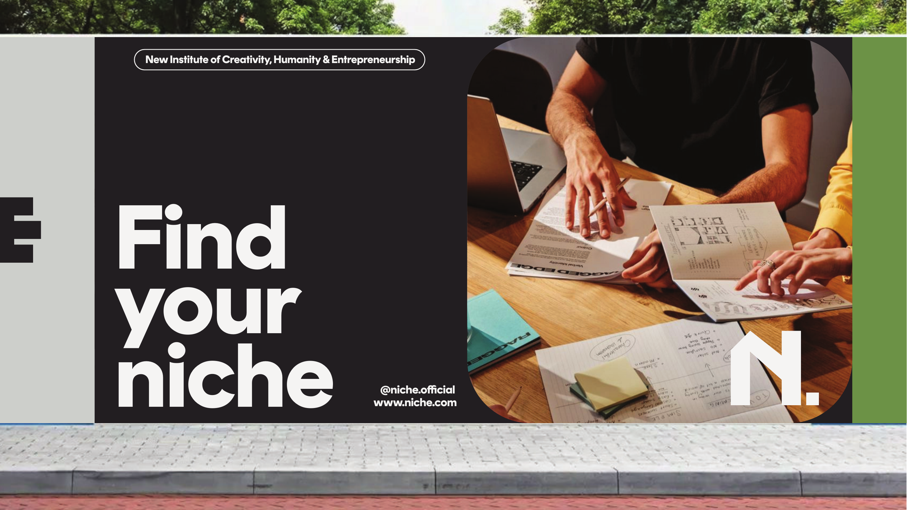
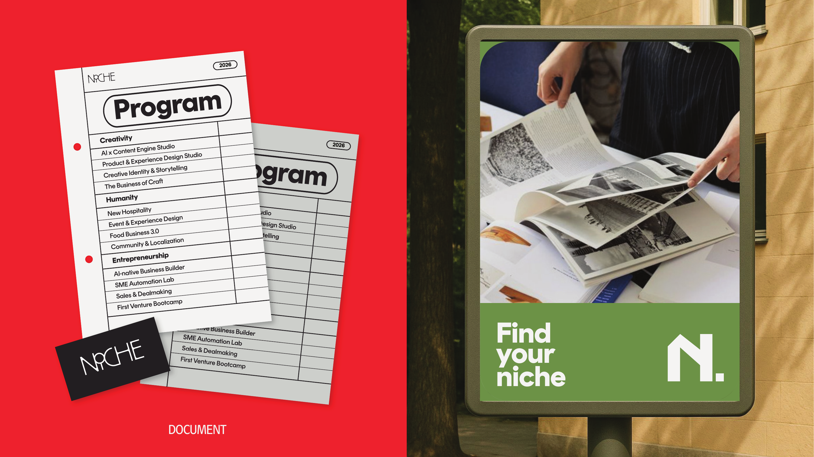

Photography Direction
No stock photos of diverse teams collaborating. Hands mid-task. Workspace cluttered but intentional. People in flow, never posing.
These images already exist. Study them.
The following pages from the original brand PDF represent the intended photography direction. They are not perfect examples — they are the starting point. All future photography should match or exceed this quality of intention.




One brief can't cover 12 programs. Three modes can.
NICHE's photography system separates into three modes based on function. Brief your photographer by mode. Different modes may be mixed within a campaign but not within a single layout.
Faculty member in their workspace, deep in a task they actually do. Environmental context. Loose + wide framing. Hard window light or single overhead. No posed eye contact. The person is not performing.
Close-detail cropping: hands holding tools, annotating, measuring, sketching. Physical artifacts in frame. Slightly overexposed matte grade to match the off-white brand palette. Warm but not filtered.
Flat-lay or 45° overhead of the work product itself — sketchbooks, mockups, printed sheets, screen recordings. Neutral background (off-white or dark). This is evidence photography, not atmosphere photography.
References to study. Patterns to avoid.
Closest published references: Bloomberg Businessweek (personal POV photographers, tension in image-text harmony) and Hyper Island (unpolished candid process shots, not aspirational product photography). Avoid every bootcamp photography trope.
Lightroom / Camera Raw. Repeatable. Consistent.
This is the starting point for every NICHE image grade. Apply as a Lightroom preset named "NICHE-v1". Never deliver images without this base grade applied — consistency across dozens of sessions depends on it.
- Exposure +0.30: Lifts the midtones to match the off-white #f2f1f0 brand surface — images integrate with page rather than fighting it.
- Blacks +20 (matte lift): Creates the matte aesthetic. Black points never crush to pure black — film-like softness without visible filtering.
- Temperature +200K: Warm shift that matches the warm-neutral brand palette. Keeps skin tones alive without going orange.
- Vibrance −10: Keeps reds from flaring out of the brand system. The brand's own red (#fe1d25) is the only aggressive red in NICHE imagery.
30 hero shots. 12 programs. One grade.
NICHE Photography Brief — [Program Name]
Shoot date: [TBC]
Location: [studio / outdoor / venue TBC]
Mode: [Mode 1 Editorial / Mode 2 Lifestyle / Mode 3 Work Documentation]
What we need:
- 5–10 hero shots per program at 5000px+ RAW
- Subjects: [faculty name TBC] + [enrolled cohort members TBC]
- Negative space: upper-third or left-third clear for type overlay
Subject behavior:
- Mid-task at all times — no eye contact with camera
- Physical artifacts visible: [sketchbooks / laptop / tools / [program-specific]]
- One environmental (room context) + four close-detail per session
Light:
- Natural window light preferred. If artificial: single hard source, one direction.
- No on-camera flash. No ring lights. No 3-point studio setup.
Grade:
- Deliver: RAW + uncropped
- NICHE-v1 Lightroom preset applied before delivery (preset provided)
- Color check: reds should not exceed #fe1d25 saturation
Output formats:
- 2:3 portrait (IG story / billboard vertical)
- 16:9 landscape (hero / OOH)
- 1:1 square (IG post / card thumbnail)